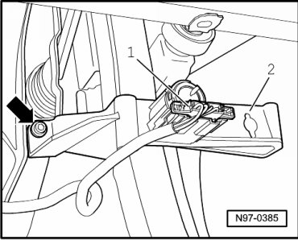
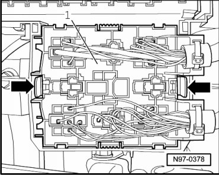
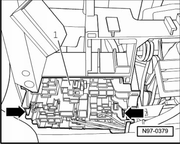

Relay Carrier in Left Front Footwell
Relay Carrier in Left Front Footwell
CAUTION!
When disconnecting and connecting the battery, always perform the work procedure as described in the repair information --> [ Battery, One-Battery Layout, Disconnecting and Connecting ] Battery, One-Battery Layout, Disconnecting and Connecting. Not adhering to sequence will result in the deactivation of Main Battery Switch -E74- and subsequent damage to electrical system components.
Removing
CAUTION!
When disconnecting battery, procedure must always be followed as described in the repair information --> [ Battery, with Auxiliary Battery or Two-Battery Layout, Disconnecting
and Connecting ] Battery, with Auxiliary Battery or Two-Battery Layout, Disconnecting and Connecting. Not adhering to sequence will result in the deactivation of Main Battery Switch -E74- and subsequent damage to electrical system components.
- Disconnect battery --> [ Battery, One-Battery Layout, Disconnecting and Connecting ] Battery, One-Battery Layout, Disconnecting and Connecting.
- Remove lower storage compartment on driver side.
- Disconnect harness connector - 1 - at brake pedal switch.

- Loosen bolt at left - arrow - and at right (not shown) at bracket - 2 - of brake pedal switch.
- Remove bracket - 2 - of brake pedal switch out of vehicle.
- Press retaining tabs - arrows - together and remove front relay carrier - 1 - with connected wires out of bracket.

- Press retaining tabs - arrows - together and remove rear relay carrier - 1 - with connected wires out of bracket.

Installing
Install in reverse order of removal.